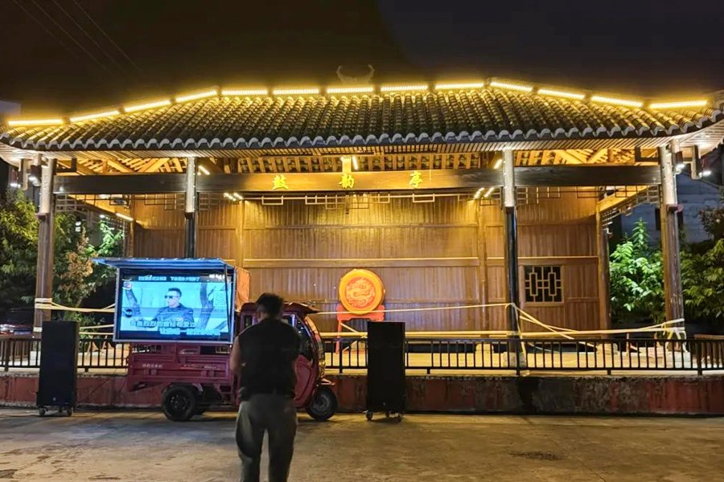

茅田乡 · 2023 年暑期
年轻人把课堂搬到鼓韵亭

2023 年暑假，湖北民族大学的“文旅助乡村”团队来到茅田。在十天的走访中，师生进村委会，也走近村民和游客，寻找课本之外的乡土文化。
鼓韵亭是他们考察的一站。团队与丝弦锣鼓传承人访谈、体验演奏，了解当地鼓乐的历史和传承状况；遇伯文化广场的苗鼓舞台，也进入了他们的观察。
这类走访把两代人连接起来：艺人讲自己的经验，学生把听到的内容带入研究。看一场演出之外，多问一句鼓从哪里来、由谁教会，便能发现音乐背后的人。
查看图文出处与说明
湖北民族大学 · “文旅助乡村”团队赴建始茅田助力乡村振兴 · 2023-08-06 ↗实践团队考察茅田“鼓韵亭” · 湖北民族大学报道配图，2023 年。